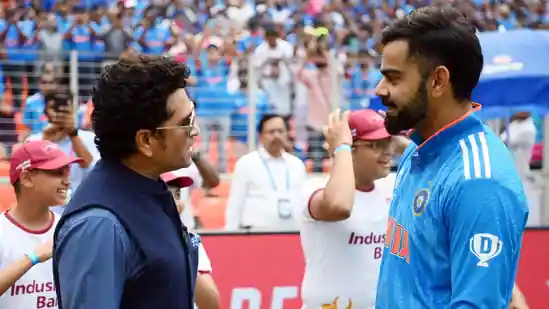

Virat Kohli hopes he can live up to Sachin Tendulkar's expectations after equalling the master blaster's ODI centuries record.
If Virat Kohli hadn't made his 35th birthday memorable already by scoring a 49th century in ODIs, Sachin Tendulkar sure made it special. With the entire world waiting with bated breath for Kohli to go level-pecking with the legendary Tendulkar, the moment finally arrived when a backfoot punch for a single gave Kohli his 4th World Cup ton – first against South Africa. But the icing on the cake came approximately 10 minutes later, when the genius himself sent out a special message for Kohli.
"Well played Virat. It took me 365 days to go from 49 to 50 earlier this year. I hope you go from 49 to 50 and break my record in the next few days. Congratulations," Tendulkar wrote on X.
virat kohli go to frist page